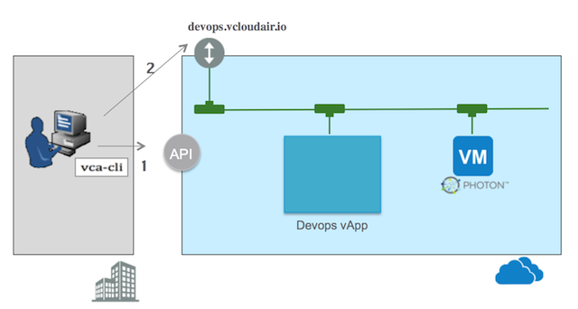

To run vca-cli, the vca command line interface must be installed on the workstation.
For OnDemand Service Accounts: A Photon image is available in the vCloud Air public catalog
For Subsription Service Accounts: A Photon .iso must be uploaded to a VM and stored in a VDC custom catalog
The Edge Gateway should be configured to support DNS forwarding.
Note that the new VM created in this example is accessed from outside vcloud Air through an existing ssh proxy running in the VDC.
This approach removes the need for a new public ip on the gateway for every new VM..
Refer to the 'Setting up ssh for vCloud Air' section in under the Docs link for details on how to configure a proxy node.

The vca cli will...
Connect to vCloud Air
Create the VM using the vCloud Air API
Start the VM
SSH into Photon and start the Docker Service
Commands
Here are the vca-cli commands necessary to run the scenario.
.
If executed from within vCloud Air (for example from Jenkins) then the public IP and NAT configuration steps can be omitted.
Click on
to try it. (Login required)
# Login
vca login appstech@websterx.com --password "$VCA_PASS" --instance 97453e02-e83c-4cae-bbe9-3f7ee6dd8401 --vdc VDC1
export VAPP_NAME=vcaPhoton
export VM_NAME=vcaPhoton
# Create a vApp
vca vapp create -a $VAPP_NAME -V photonNode -c 'Public Catalog' -t 'VMware Photon OS - Tech Preview 2' -n default-routed-network -m pool
# power on the vApp
vca vapp power-on --vapp $VAPP_NAME
sleep 5
# Get the IP of the new node
export IP=`vca vm -a $VAPP_NAME | grep $VM_NAME | cut -d '|' -f5 | tr -d '[[:space:]]'`
# Get the initial admin password for root
export ADMIN_PASS=$(vca vapp info --vapp $VAPP_NAME | grep admin_password | cut -d\| -f4)
# ssh into Photon and enable and start Docker
sshpass -p $ADMIN_PASS -e ssh -t -v root@${IP} "systemctl enable docker && systemctl start docker && systemctl status docker"